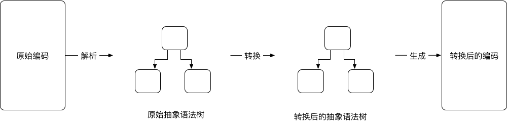
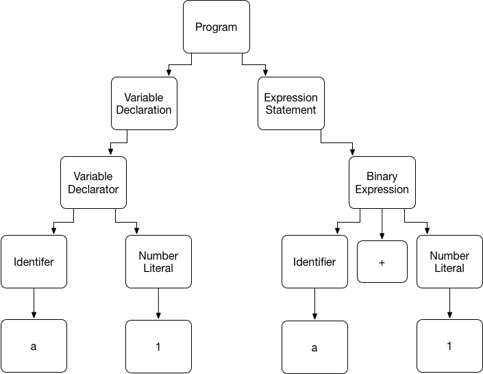
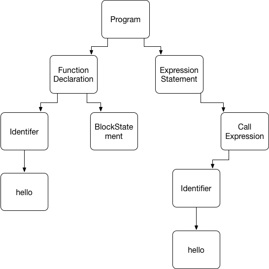
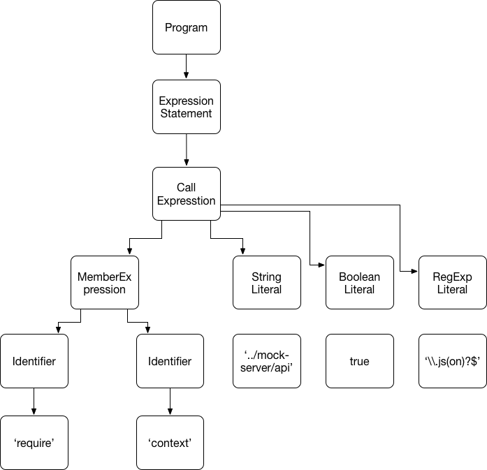
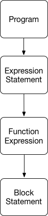

如何编写一个 babel 插件
由于目前各浏览器对 JavaScript 语言的支持并不统一，导致很多语言的新特性在浏览器上并没有得到原生支持。在这种情况下，使用 babel 转换编写为浏览器可以识别的编码，使得使用语言的新特性来编写 JavaScript 变得可行。
babel 可以将各种高版本的的 Javascript 编码转换成低版本的编码（例如，将 es7, es6转换成 es5，甚至转换成 es3），它也允许使用者开发插件，能够在编译时自定义转换 JavaScript 的结构的规则。
抽象语法树 (AST)
理解 babel 编码转换核心流程
babel 处理转换代码的核心流程如下：

解析（Parse）
babylon 是一个解析器，它可以将 JavaScript 字符串转换为对计算机来说更加友好的表现形式，称之为抽象语法树（AST）。
转换（Transform）
babel-traverse 模块允许你浏览、分析和修改抽象语法树（AST）。
生成（Generate）
最后，babel-generator 模块用来将转换后的抽象语法树（AST）转换为 JavaScript 字符串。
理解抽象语法树 AST
JavaScript 代码是设计成便于人理解的，但是计算机并不能直接理解 JavasScript 代码。
抽象语法树不同于 JavaScript 代码，它是一种对计算机来可以理解的树结构。
我们来看一下如下代码：
var a = 1;
a + 1;
通过这段代码我们可以得到如下的 AST 树

小技巧：我们可以编写 JavaScript 代码，使用 babylon 将代码转换成 AST 树，并查看该树的结构。我们也可以通过在线工具将代码转换成 AST 树并查看（见附录）
我们可以看出 AST 语法树的特征，Program 代表一段编码程序，每一段声明定义或者表达式语句，都会被解析成一个构造对象 Declaration 或 Expresstion。VariableDeclaration表示一段变量声明，Identifier 表示标识符，它的值是 a，NumberLiteral 表示数字字面量，它的值是 1，整个VariableDeclaration 对象对应代码段 var a = 1;。 ExpressionStatement 表示一段表达式语句, BinaryExpression 表示是做运算的表达式，同样Identifier 表示标识符，它的值是 a，NumberLiteral 表示数字字面量，它的值是 1。整个 ExpressionStatement 对象对应代码段 a + 1;
我们再来看一下如下代码：
function hello() {}
hello();
通过这段代码我们可以得到如下的 AST 树

这段代码的语法树，我们可以看出：FunctionDeclaration表示一段函数声明，Identifier 表示标识符，它的值是 hello，BlockStatement 花括号，整个FunctionDeclaration 对象对应代码段 function hello() {}。 ExpressionStatement 表示一段表达式语句, CallExpression 表示是执行函数的表达式，同样Identifier 表示标识符，它的值是 hello。整个 ExpressionStatement 对象对应代码段 hello();
编写 babel 插件
babel 插件的编写方式很简单，简单实现如下：
module.exports = function(babel) {
return {
visitor: {
<babel语法树类型1>: function(path, options) {
// 改变语法树实现1
}，
<babel语法树类型2>: function(path, options) {
// 改变语法树实现2
}，
...
}
};
};
我们可以看到 babel 的插件实现，只需要导出一个函数模块， 这个函数的返回值是一个对象，必须是一个包含键名为 visitor 的对象，这个对象包含键名为任意 babel 语法树构造类型，值为一个包含改变语法树实现的函数。
我们先编写一个改变变量 a 的值的 babel 插件，使用后的效果应如下：
原始代码：
var a = 1;
var b = 2'
转换后代码
js
var a = 2;
var b = 1;
为此，我们创建了一个名为 babel-custom-code-filter.js 的插件文件，代码如下：
module.exports = function(babel) {
var t = babel.types;
return {
visitor: {
VariableDeclarator: function(path, settings) {
const node = path.node;
if (node.id.name === 'a' && node.init.value === 1) {
node.init.value = 2;
} else if (node.id.name === 'b' && node.init.value === 2) {
node.init.value = 1;
}
}
}
};
};
为了验证这个插件，需要使用 babel-core 模块的 transform 方法，我们创建了名为 ast.js 的文件，代码如下：
const code = `
var a = 1;
var b = 2'
`;
const babel = require('babel-core');
const ast = babel.transform(code, {
plugins: [
[
require(‘./babel-custom-code-filter’),
{
debug: true,
}，
],
],
});
console.log(ast.code);
最终转换后的代码为：
js
var a = 2;
var b = 1;
更多示例
我们希望自定义一个转换规则，将如下形式的代码，
...
require.context('../mock-server/api', true, /\.js(on)?$/);
...
转换成如下：
...
(function () {});
...
我们首先来看一下改变前代码，与改变后代码的语法树结构
改变前：

改变后：

在了解了语法树的差异后，我们可以开始编写插件了，我们只需要定位到符合规则的语法树插件， 并将其替换成我们需要的语法树即可。
代码如下：
module.exports = function(babel) {
var t = babel.types;
return {
visitor: {
CallExpression: function(path, options) {
const node = path.node;
const arguments = node.arguments;
const callee = node.callee;
if (arguments &&
arguments.length === 3 && callee &&
callee.object &&
callee.object.name === 'require' &&
callee.property &&
callee.property.name === 'context' &&
arguments[0].value === '../mock-server/api' &&
arguments[1].value === true &&
arguments[2].pattern === '\\.js(on)?$') {
path.replaceWith(
t.functionExpression(null, [], t.blockStatement([])),
);
}
}
}
};
};
代码示例地址可以查看附录。
附录
- astexplorer: 在线将代码转换成 AST 树结构的工具
- babel语法树类型
- 代码示例
- 开源 babel 插件